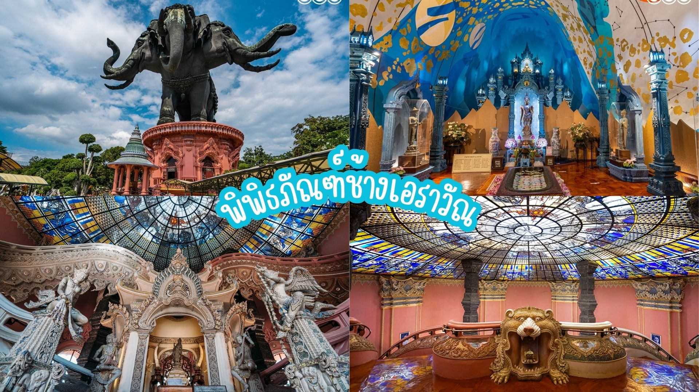

๑. พิพิธภัณฑ์ช้างเอราวัณ
ไหว้พระขอพร เสริมความเป็นสิริมงคล พาสายบุญไปลอดท้องช้าง 3 เศียรพร้อมไหว้สักการะพระรอบพิพิธภัณฑ์ ชมสถาปัตยกรรมลายไทยที่สวยงามบรรยากาศร่มรื่นรื่นภายในสวนขนาดใหญ่ที่สมุทรปราการ
ไหว้พระขอพร เสริมความเป็นสิริมงคล พาสายบุญไปลอดท้องช้าง 3 เศียรพร้อมไหว้สักการะพระรอบพิพิธภัณฑ์ ชมสถาปัตยกรรมลายไทยที่สวยงามบรรยากาศร่มรื่นรื่นภายในสวนขนาดใหญ่ที่สมุทรปราการ